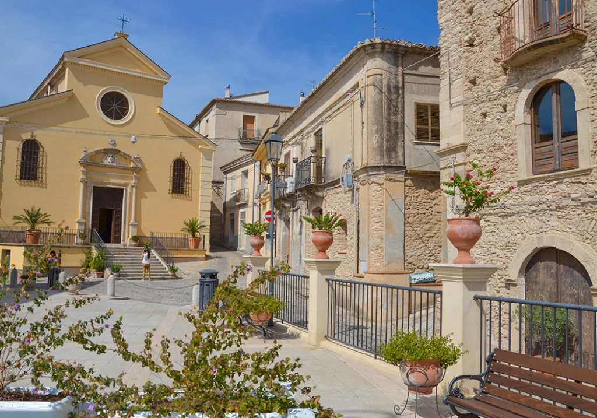
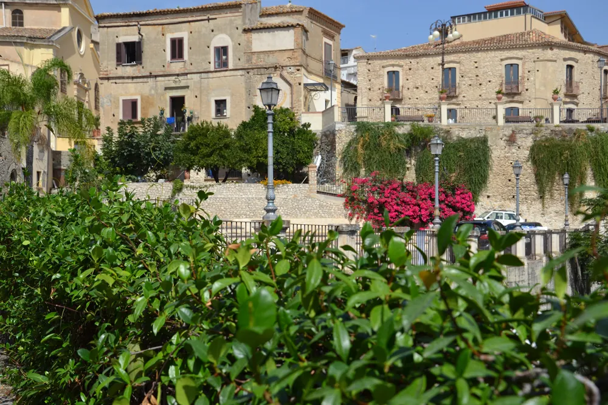
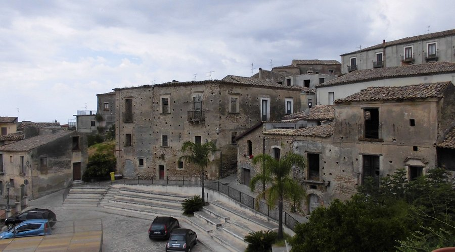
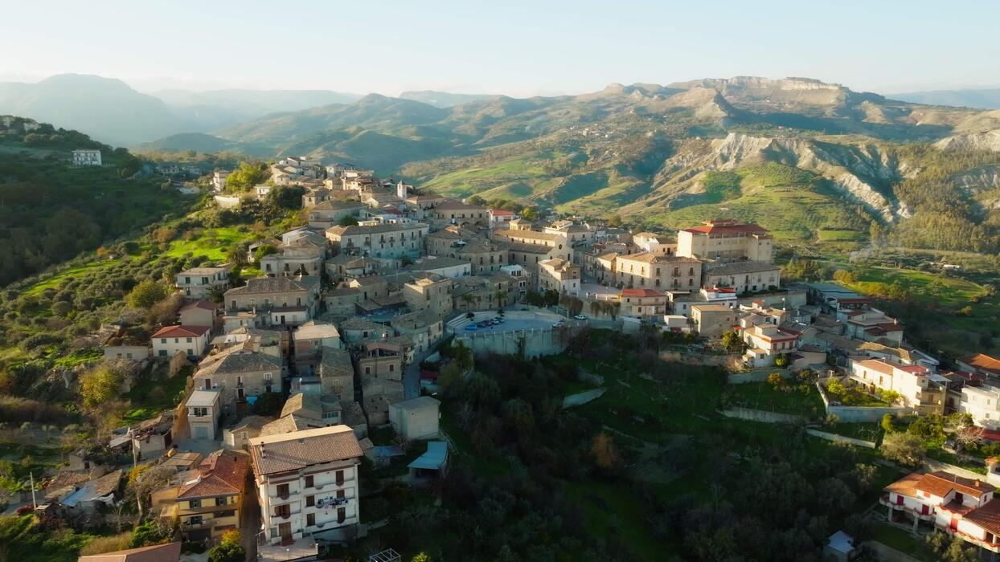
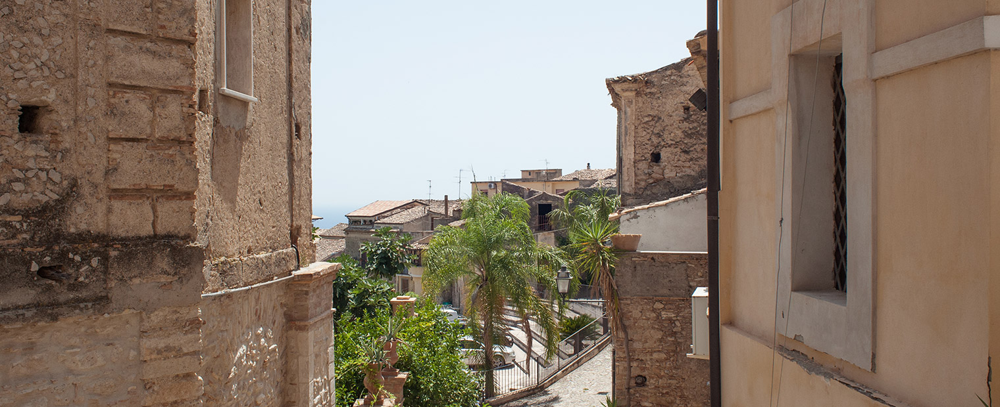
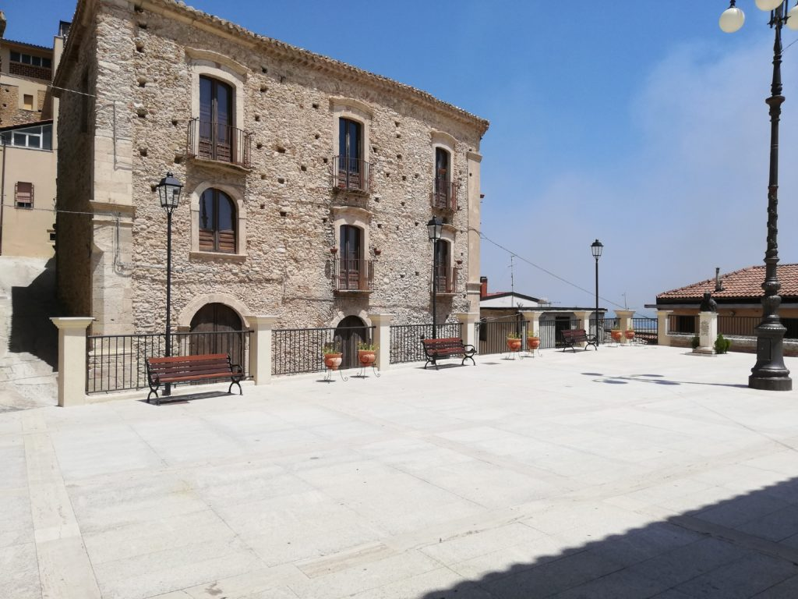

Siderno
Siderno Superiore, il borgo medievale dove il tempo sembra essersi fermato: vicoli antichi, palazzi nobiliari, e una terrazza panoramica sul Mar Ionio.
Altitudine
192 m s.l.m. (Siderno Superiore)
Prime attestazioni
XII-XIII secolo
Abitanti
Circa 18.000 (comune)
Patrono
San Nicola di Bari (6 dicembre)
Il Borgo Medievale
Un Viaggio nel Tempo
Siderno Superiore sorge su una collina a circa 200 metri di altitudine, sulle pendici dell’Aspromonte. Le sue origini risalgono al Medioevo: prime notizie documentate nel 1220, quando l’abitato era già organizzato attorno a un castello. Tra il XIV e il XV secolo si sviluppò l’insediamento attuale, con la costruzione della cinta muraria e delle torri difensive. Nel 1532 l’imperatore Carlo V elevò Siderno a baronia autonoma, concedendola a Giovan Battista Carafa, che rafforzò le fortificazioni.
Oggi il borgo conserva intatto il suo fascino medievale: vicoli stretti, case in pietra, piccole piazze e scorci panoramici sul mare Ionio. Delle antiche mura restano pochi tratti, ma sono ancora visibili i resti di alcune torri e la celebre Torre Tamburi, eretta in epoca angioina (XIV secolo) e demolita nel 1893.
Torre Tamburi e le Fortificazioni
La Torre Tamburi fu costruita nel XIV secolo per volere della corona angioina. Era una delle torri più imponenti del sistema difensivo, insieme ad altre strutture oggi scomparse. Nel Cinquecento il conte Vincenzo Carafa ne potenziò l’apparato difensivo, dotandolo di bastioni e porte d’accesso (Salita Arco, Passioti, Ianora).
Dopo la demolizione del 1893, della torre restano solo alcuni disegni d’epoca e la memoria nel nome di una delle strade del borgo. Camminando per il centro storico si possono ancora ammirare i portali in pietra bugnata di palazzi come Palazzo De Mojà, Palazzo Falletti (con portale monumentale), Palazzo Calautti e Palazzo Correale‑Santacroce.
Cuore Spirituale e Belvedere
Chiesa di San Nicola di Bari
La Chiesa di San Nicola è la matrice del borgo. Di origine normanna (XI secolo), fu più volte ricostruita, assumendo l’attuale aspetto tardo‑rinascimentale nel XVII secolo, dopo il terremoto del 1638. All’interno conserva un prezioso altare maggiore in marmo policromo, opera di Vincenzo Trinchese (1775), e il cosiddetto “Tesoro di San Nicola”, un insieme di oreficerie e paramenti sacri dal XVI al XVIII secolo.
La festa patronale si celebra il 6 dicembre con una solenne processione che attraversa le vie del borgo, accompagnata da musica e momenti di convivialità.
Piazza Cavone: Terrazza sullo Ionio
Inaugurata nel 2016, Piazza Cavone è oggi il cuore pulsante di Siderno Superiore. Questa ampia terrazza naturale si affaccia sul Mar Ionio regalando una delle viste più suggestive della Locride. Al centro, le statue di Ercole e Telefo (donate dallo scultore Antonio Biancospino) e un’elegante fontana. Sulla piazza si affacciano palazzi storici e un punto informazioni turistiche attivo nei periodi di maggiore afflusso.
Da qui partono i percorsi alla scoperta del borgo, tra chiese, palazzi gentilizi e i caratteristici “vinedi” (vicoli stretti) che conservano intatta l’atmosfera di un tempo.
Valorizzazione e Turismo Culturale
Progetti di Tutela
Siderno Superiore è oggi al centro di iniziative di tutela e promozione turistica. Associazioni locali come “Pajisi meu ti vogghiu beni” e il Comitato Pro Piazza Cavone organizzano visite guidate, rievocazioni storiche e laboratori didattici per far conoscere il patrimonio artistico e architettonico del borgo.
Tra gli itinerari più apprezzati: “Siderno Medievale” (alla scoperta delle mura, delle porte e della Torre Tamburi) e “I Palazzi Nobiliari”, che conduce nei cortili e nei portali di alcune delle dimore storiche meglio conservate.
Eventi e Tradizioni
L’estate anima il borgo con la “Sagra della Focaccia” (tipico prodotto locale, condito con olio extravergine e origano), concerti di musica popolare e mostre d’arte. Durante tutto l’anno sono attive iniziative legate alla tradizione contadina, come la “Festa dell’Uva” e i laboratori di tessitura e ceramica.
Il borgo è anche punto di partenza per escursioni nei sentieri dell’Aspromonte, tra uliveti secolari e antichi mulini ad acqua, ideali per chi ama il turismo lento e a contatto con la natura.
Gastronomia e Prodotti Tipici
Sapori della Locride
La cucina di Siderno esprime la ricchezza del territorio locrese: olio extravergine d’oliva DOP, agrumi (arance, limoni, bergamotto), vini pregiati e formaggi caprini. Tra i piatti tradizionali spiccano le “fileja” (pasta fatta in casa) con sugo di capra o con le vongole, la “zuppa di pesce” alla sidernese e lo “stocco alla mammolese”, ereditato dalla vicina tradizione marinara.
I dolci tipici includono le “susumelle” (biscotti a base di mosto cotto) e i “pitticelli” (frittelle dolci), preparati in occasione delle festività religiose.
Artigianato e Tradizioni Contadine
L’artigianato locale conserva antiche tecniche: la lavorazione del legno (sedie, mobili rustici), la ceramica decorata a mano e la tessitura con telai a mano, ancora praticata da alcune artigiane. I prodotti tessili (coperte, “pezzane”) sono un simbolo dell’identità contadina e vengono oggi riproposti in chiave contemporanea.
Durante l’anno, i visitatori possono assistere a dimostrazioni dal vivo presso le botteghe storiche, scoprendo il sapere tramandato di generazione in generazione.
Tradizioni e Cultura
Festa di San Nicola
Il 6 dicembre il borgo celebra il patrono con solenni processioni, messe e momenti di convivialità. Un’antica tradizione prevede la distribuzione di biscotti benedetti.
Sagra della Focaccia
In estate, la sagra celebra la focaccia tipica, condita con olio extravergine, pomodoro e origano, accompagnata da musica e balli popolari.
Leggende e Racconti
Il borgo è ricco di leggende legate alla Torre Tamburi e ai passaggi sotterranei che un tempo collegavano il castello con la costa. Storie di pirati e di tesori nascosti.
Sentieri e Panorami
Da Piazza Cavone partono sentieri tra uliveti e macchia mediterranea che conducono a belvedere naturali, ideali per escursioni e birdwatching.
Galleria Fotografica






Info Utili
Come Arrivare
In Auto: SS106 Jonica, uscita Siderno. Seguire
le indicazioni per Siderno Superiore (strada panoramica).
Dista circa 10 km da Locri e 85 km da Reggio Calabria.
Parcheggio disponibile ai piedi del borgo e in prossimità di
Piazza Cavone.
Comune e Informazioni
Comune di Siderno
Piazza Vittorio Emanuele III, 1
89048 Siderno (RC)
Tel: 0964 381220
Sito web:
www.comune.siderno.rc.it
Visite Guidate
Per informazioni su visite guidate ed eventi culturali è possibile
contattare l’Ufficio Turistico Comunale (tel. 0964 381220) o la
Pro Loco Siderno (presso Piazza Cavone).
Sono disponibili percorsi tematici: “Siderno Medievale”,
“I Palazzi Nobiliari”, “I Sapori della Locride”.
Ente Parco Nazionale dell'Aspromonte
Sede: Via Aurora, 1 - Gambarie, 89057 Santo
Stefano Aspromonte (RC)
Tel: 0965 743060
Email:
info.posta@parconazionaleaspromonte.it
Sito web:
www.parconazionaleaspromonte.it